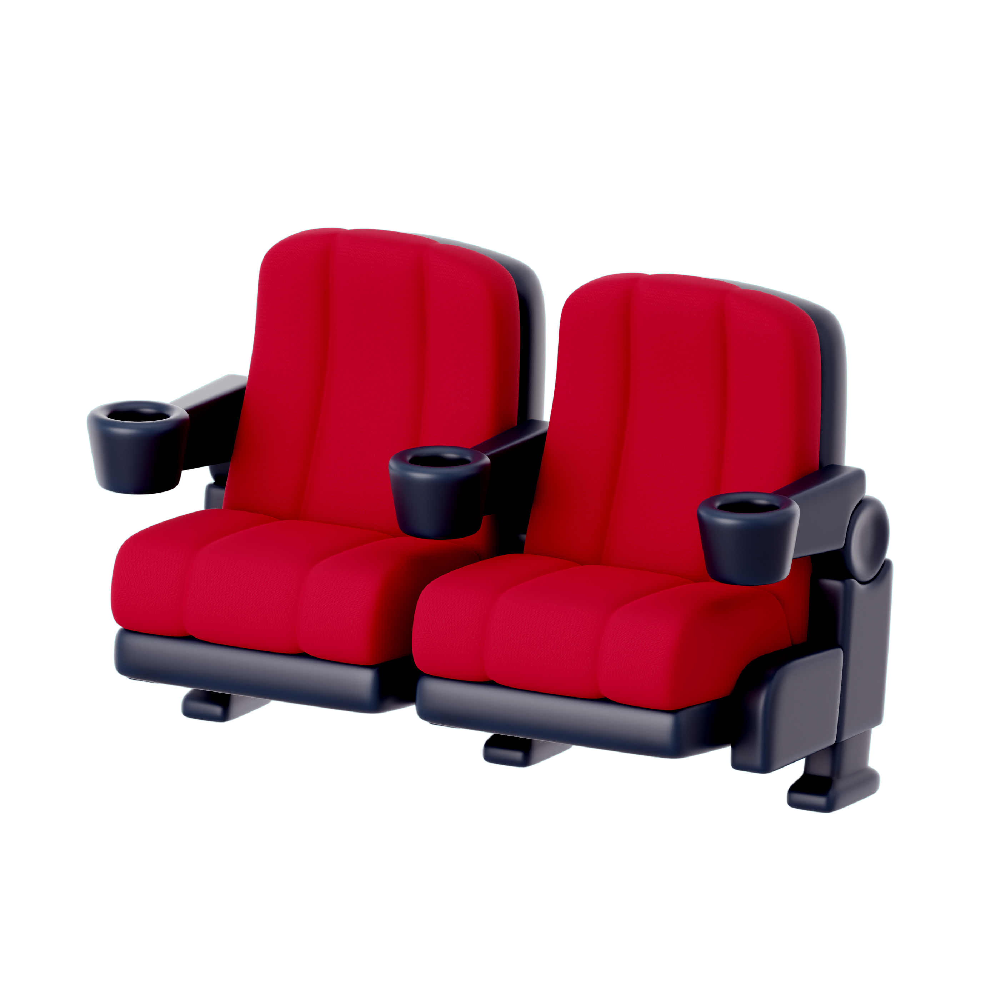

Soluções inteligentes para proteger o que realmente importa.

Sistema de Automação de Travas Automáticas em Assentos
Um sistema de automação de travas automáticas em assentos é uma tecnologia inovadora projetada para gerenciar e controlar o acesso a assentos em locais como cinemas, teatros, estádios e outros eventos de grande porte. Esse sistema utiliza uma combinação de hardware e software para garantir que apenas os espectadores autorizados possam ocupar assentos designados, proporcionando uma experiência organizada e segura.
Componentes do Sistema
- Travas Automáticas: Dispositivos instalados em cada assento que podem ser trancados ou destrancados remotamente.
- Controle de Acesso: Utiliza métodos como QR Codes, cartões RFID, senhas ou aplicativos móveis para liberar o assento.
- Software de Gerenciamento: Plataforma centralizada que permite a configuração e monitoramento das travas dos assentos, gerenciando reservas, horários de acesso e registros de utilização.
- Sensores: Sensores de ocupação que detectam se o assento está sendo utilizado, integrando essas informações ao sistema de gerenciamento.